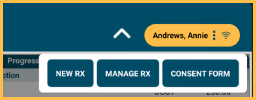

ODTouch: Chart
View the patient's chart information and add or edit treatment as needed.
From the ODTouch: Home Screen, tap Chart.

The Chart Home screen mimics the Chart Module in Open Dental. This screen is not available when using a mobile phone device.
Odontogram Notes: Tap the edit icon to add or edit odontogram notes.
Patient Info: Scroll to view a read-only copy of patient information.
Progress Notes: View the patient progress notes.
- Tap the filter icon in the upper right to filter the progress notes.
- Use the Prev and Next buttons to view additional progress notes.
- Tap a procedure to make edits. See ODTouch: Procedure Edit.
- Tap an appointment to view appointment details. See ODTouch: Appointments.
Tap the edit icon to chart procedures or edit the tooth chart. See ODTouch: Chart Edit.
Chart Dropdown
Tap the caret at the top to view additional chart options.
New Rx: Tap to create a new prescription. See ODTouch: New Rx. To send an electronic prescription, see ODTouch: eRx instead.
Manage Rx: Tap to open the Manage Rx screen. See ODTouch: Rx Manage.
Consent Form: Tap to select a consent from the list to generate for the patient to sign. Only Consent Form Sheets with Mobile Layout enabled are available to select.